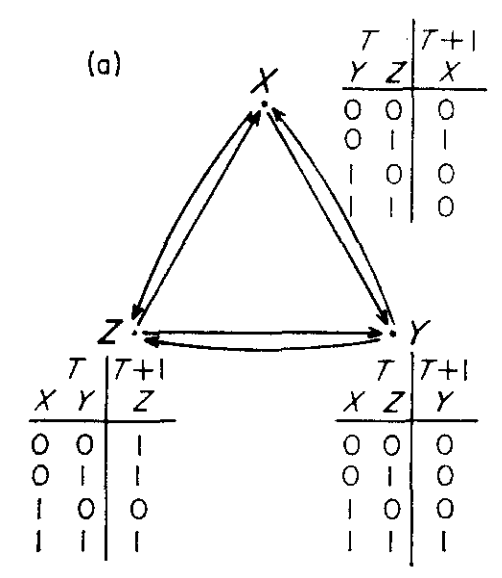
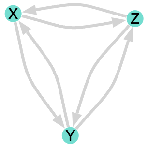
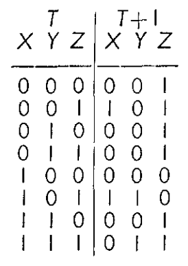
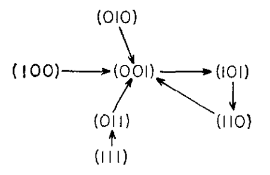
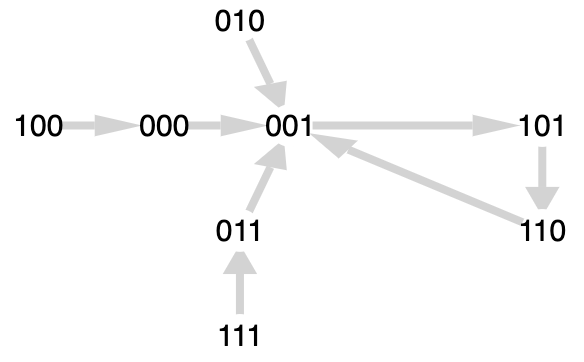
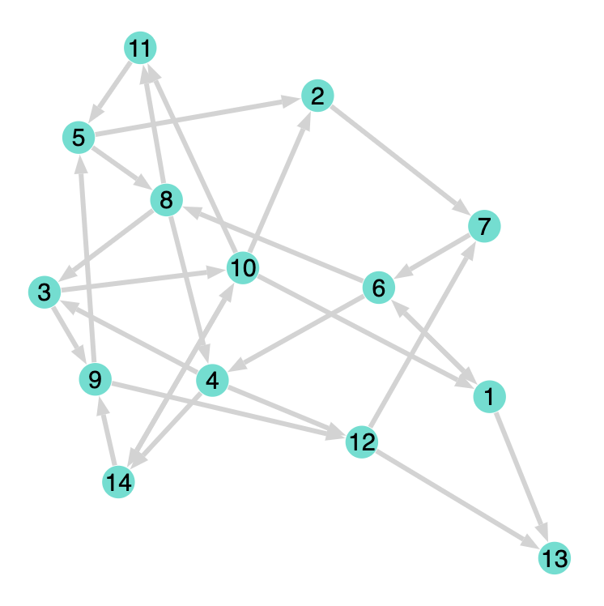
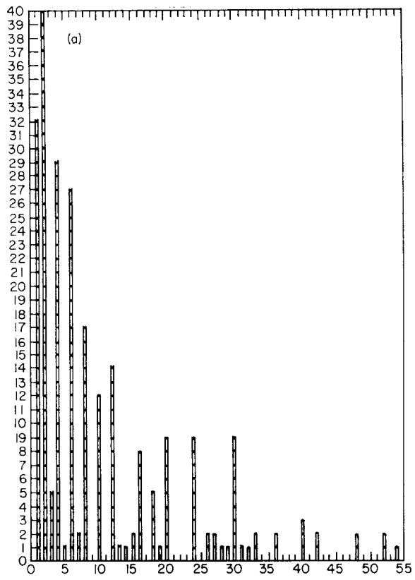
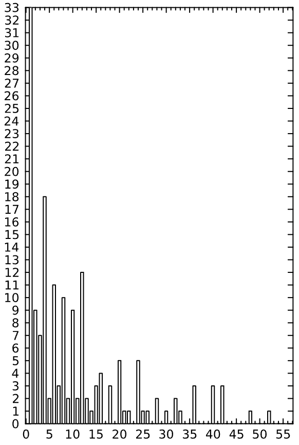
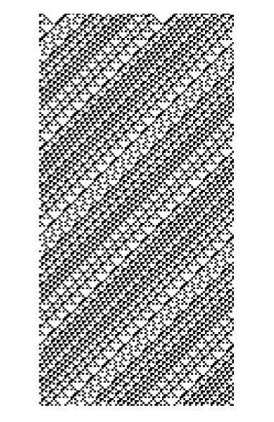

Kauffmann’s Basic Gene Nets
Stuart Kauffman’s 1969 paper Metabolic Stability and Epigenesis in Randomly Constructed Genetic Nets introduced a simple model of gene interaction which seemed to capture certain characteristics of real biological systems. It was a precursor for later work on NK-models and cellular automata. They have come up recently in different forms such as Stephen Wolfram’s work on biological computability12 and Barry O’Reilly’s Residuality Theory.
1 Why Does Biological Evolution Work? A Minimal Model for Biological Evolution and Other Adaptive Processes (Wolfram - May 2024).
2 Foundations of Biological Evolution: More Results & More Surprises (Wolfram - December 2024).
I’m going to take the approach of just reproducing Kauffman’s initial results, as I like to do, including some additional work to link it to Wolfram’s classes. I have also done some work on the separability, divisibility and reversibility of these nets but that will be in another post.
The setup
The paper begins like this:
Proto-organisms probably were randomly aggregated nets of chemical reactions. The hypothesis that contemporary organisms are also randomly constructed molecular automata is examined by modeling the gene as a binary (on-off) device and studying the behavior of large, randomly constructed nets of these binary “genes”.
First some terminology. Kauffman refers to his net as “a binary (on-off) device”. We will call this a boolean network because each node has a boolean value attached to it, on or off. When he uses the word “gene” (in quotes) he’s referring to the individual nodes of the network.
There are \(N\) nodes and each node is attached to \(K\) other nodes. By way of example Kauffman uses a simple network with 3 nodes and 2 connections.


The network is allowed to evolve in a particular way:
… the inputs to each binary “gene” may be chosen at random; the effect of those inputs on the recipient element’s output behavior may be randomly decided by assigning at random to each element one of the possible Boolean functions of its inputs.
For example, if a node has two inputs A and B (K=2) then the rule might be or \(A\) AND \(B\) or \(A\) XOR \(B\), assigned at random, and the node’s value would be updated accordingly.
Alternatively, these rules can be represented in full generality as a truth table. Since for this study we don’t care what the actual rules are in terms of ANDs and ORs, we will construct the update rules simply by taking a random truth table.
To reproduce Kauffman’s simple example in the paper we assign the following truth table to the network:
| Node | Inputs | \(00\) | \(01\) | \(10\) | \(11\) |
|---|---|---|---|---|---|
| \(X_{T+1}\) | \(YZ\) | 0 | 1 | 0 | 0 |
| \(Y_{T+1}\) | \(XZ\) | 0 | 0 | 0 | 1 |
| \(Z_{T+1}\) | \(XY\) | 1 | 1 | 0 | 1 |
Enumerating the small number of possible states in this example we find the following update rule:
\(f: X \times Y \times Z \rightarrow X \times Y \times Z\)

[0, 0, 0] => [0, 0, 1]
[0, 0, 1] => [1, 0, 1]
[0, 1, 0] => [0, 0, 1]
[0, 1, 1] => [0, 0, 1]
[1, 0, 0] => [0, 0, 0]
[1, 0, 1] => [1, 1, 0]
[1, 1, 0] => [0, 0, 1]
[1, 1, 1] => [0, 1, 1]When the update rule is applied multiple times, the values of the nodes enter a dynamic wholly defined by the truth table. Since this is a finite system, at some point the values will enter a cycle. The maximum possible cycle length is \(2^N\) (or \(2^3=8\) in our small example) but often the cycles will be shorter. By tracing the dynamics for each of the possible state values we can draw a graph of their trajectories3.
3 Kauffman calls these diagrams kimatograph in the paper but it doesn’t seem to be a term that caught on, although I quite like it.


By looking at the diagram and following the arrows, it’s clear that all the states eventually fall into the same cyclic behaviour. There is a transient (or run-in) period between the initial state and the first state encountered on a cycle. Kauffman defines a confluent as the set of states leading into, or on, a cycle. In this case there is only one.
The results
In the paper, Kauffman studied the dynamics of large networks, keeping \(K=2\). Just by way of example a graph representation of a network with \(N=14,K=2\) might look like the following diagram.

The situation clearly becomes more complicated very quickly and you’d expect the dynamics to be equally complicated. However, Kauffman goes on to say:
The results suggest that, if each “gene” is directly affected by two or three other “genes”, then such random nets: behave with great order and stability.
This is the crux of the study and mostly borne out but we will see that there are important exceptions. Kauffman realised this and the nuance became of central importance in the development of complex systems theory although it is understated in this early paper.
Take, for example the histogram of cycle length. Kauffman discovered that the average cycle length for (\(N=400,K=2\)) nets with random truth tables was smaller than might be expected. We can reproduce the result fairly well.


There are immediately some things to note. First the similarity is remarkable, especially considering that this is a run of 200 random samples out of a possible \(2^{400}\) states. There are peaks at 1, 2, 4, 6, 8, 10, 12, 16, 20, 24, etc. and the trend is decreasing with larger cycle lengths.
There are two important caveats, though.
The preponderance of cycles of length two in Kauffman’s results is not present in mine. Initially, I thought this was a bug in my code but I checked and double checked the calculations by hand and couldn’t find a problem. Moreover, closer study reveals a second, related caveat worth mentioning.
I have artificially chopped the histogram at the value of 55 to match Kauffman’s. However, my results include cycles of lengths much greater then 55, some having exceeded the limit of 10,000 which I had to add to stop the simulations running forever. I have individual instances of cycle lengths of 60, 62, 72, 78, 80, 84, 96, 102, 111, 116, 168, 186, 248, 282, 292, 320, 381, 438, 458, 482, 508, 1017, 1260, 1281, 1552, 3066, 3500, 3628, 6527 and eight more reaching the upper limit.
Suspiciously, my results typically show a similar number of cycle lengths above 55 as the difference in Kauffman’s and my results for 2-cycles. For example, the 2-cycle count from my experiment shown in the figure, was 9. The number of cycles of length greater than 55 was 39. Kauffman’s 2-cycle count was 40.
I don’t have Kauffman’s original code and I can’t formally prove my code is correct. Nonetheless I have found an interesting way of testing it which is instructive in itself. The idea is to narrow in on Stephen Wolfram’s well-known 1D cellular automata as a special case of Kauffman’s boolean nets.
Wolfram’s classes
It turns out that Wolfram’s famous study of elementary 1D cellular automata (which he discusses in great depth in his book “A New Kind of Science (2002)”) can easily be modelled as a boolean net. The good thing is that the results are visually quite distinctive and can serve as a reference.
To build it, start with the \(N\) nodes arranged in a line. Connect each node to itself and its two immediate neighbours, making \(K=3\). The system is closed by wrapping around the ends of the line so that the nodes at both extremes are connected together.
Make a truth table based on one of the \(2^3\) possible rules. Wolfram codified them as numbers from 0 to 255. The truth table is identical for each of the nodes.

Allow the system to evolve, keeping records on the history of states as the rows of an image. This is what you get, for example for rule 26:

Wolfram and others have studies these nets in depth and famously found that they exhibit behaviour that fits into 4 classes:

The first class leads to a single terminal, stationary state. All 0s or all 1s. In terms of Kauffman’s nets, the cycle length in this class is 1 and we have seen that many rules lead to this outcome. Kauffman notes that removing rules which always resolve to 0 or 14 significantly reduces the occurrence of this class.
4 He calls them contradictions and tautologies respectively.
The second class reduces to fixed patterns with simple periodic behaviour. Rule 26 shown above falls into this class. While it is a fairly complicated (using the term advisedly) pattern it is periodic and predictable.
The third class is entirely chaotic. The pattern does not converge and is only periodic to the extent of the finite state space (which may be extremely large). The appearance is of white noise and randomness and, in fact, is available as a random number generator in Mathematica.
The fourth class demonstrates complexity. The patterns are non-periodic but also not chaotic. These configurations are on the edge of chaos, neither periodic nor chaotic. One interesting property that at least two of the rules in this category have is universality5, or in other words the ability to perform any calculation.
5 Universality in Elementary Cellular Automata - Matthew Cook
What’s the relevance of all this? Well, by converting the well-documented Wolfram rules to Boolean nets I’m much more comfortable saying that my simulation is working as expected. I’ve tried many different rules and the patterns are identical to the published ones.
On top of that, since the simple cellular automata studied by Wolfram is an example of very simple Kauffman network then the Kauffman networks in general must necessarily admit such classes of behaviour, including class 3 and 4, the chaotic and universal ones. In this light, Kauffman’s discovery that the average cycle length remains smaller than might be expected is just a part of a much richer picture.
At this point I got side tracked onto a parallel way of modelling the networks which has some promise. The write up of that will have to wait until the next post.